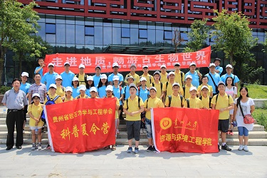

继我院地质学获批省级特色重点学科和矿物学、岩石学、矿床学获批省级重点学科，2015年8月我院又迎来了鼓舞人心的学科建设大事，地质资源与地质工程一级学科获批贵州省重点学科建设。包括重点学科、重点实验室在内的软硬件条件对学科发展及学术影响力的提高极为重要，然而我院在这方面还十分欠缺，此次获批贵州省重点学科建设，为学科的发展起到极大的推动作用。资源与环境工程学院主要面向贵州省资源需求目标和国民经济建设主战场，以资源勘查和工程建设中重大战略性问题为重点，“立足贵州，服务西南，面向世界”，充分发挥地处中国西南岩溶腹地—贵州的地域优势，紧密结合贵州及西南岩溶地区的地质地球化学特征，针对岩溶地区“固、液、气”物质循环与能量交换特点，围绕国家及区域发展战略需求，瞄准国际前沿，在矿产普查与勘探、地质工程、信息技术综合应用研究三大重点领域开展基础性、战略性和前瞻性研究，建立和完善找矿理论与成矿预测、贵州省优势矿产勘查技术与方法、矿产资源可持续利用、重大工程岩土体稳定性评价与控制技术、重大工程选址理论与技术方法、岩溶区特殊岩土体的形成机理及其工程特性、岩溶区地下水等技术与理论体系，紧密联系工程实际，构建产学研结合的创新平台，提升对岩溶资源与工程问题的决策咨询能力，为贵州及西南地区区域经济建设和社会发展作出重要贡献，已经成为我省矿产勘查、工程地质与水文地质勘查人才培养的摇篮，也是我省资源与工程建设领域非常重要的理论与技术支撑单位。
贵州大学资源与环境工程学院研究生暑期社会实践活动
---“地质精神代代传”科普夏令营
为传承地质精神，探索地质奥秘，贵州大学资源与环境工程学院研究生每年举办“地质精神代代传”夏令营活动，自2014年起，到2015年已成功举办两届。
2014年8月4日到5日，第一期“地质精神代代传—走进地质，畅游古生物世界”科普夏令营活动在贵阳花溪顺利开展。本次活动共有21名中学生、18名研究生、2名带队老师参加，活动采取由1名研究生带2~3名中学生组成，在喻羑艺老师的指导下进行。活动从开营到参观青岩奇石馆再到野外考察、采集化石，让同学们认识到各种各样的古生物化石，同时发扬了老一辈地质学家“特别能吃苦，特别能忍耐，特别能战斗，特别能奉献”的贵州地质精神。借此机会让饱受学习压力的中学生朋友们融入大自然，开拓视野，激发对大自然和科学的兴趣、热爱，向他们宣扬尊重自然、崇尚科学的理念。同时让研究生也走出校园，走向社会，在工作担当感、责任感上有进一步的认识；带头做好吃苦耐劳，将“地质精神”代代传扬。
2014年8月4日到5日，第一期“地质精神代代传—走进地质，畅游古生物世界”科普夏令营活动在贵阳花溪顺利开展。本次活动共有21名中学生、18名研究生、2名带队老师参加，活动采取由1名研究生带2~3名中学生组成，在喻羑艺老师的指导下进行。活动从开营到参观青岩奇石馆再到野外考察、采集化石，让同学们认识到各种各样的古生物化石，同时发扬了老一辈地质学家“特别能吃苦，特别能忍耐，特别能战斗，特别能奉献”的贵州地质精神。借此机会让饱受学习压力的中学生朋友们融入大自然，开拓视野，激发对大自然和科学的兴趣、热爱，向他们宣扬尊重自然、崇尚科学的理念。同时让研究生也走出校园，走向社会，在工作担当感、责任感上有进一步的认识；带头做好吃苦耐劳，将“地质精神”代代传扬。

2015年我们继续传递地质精神。本次地质精神代代传活动分为两部分，第一部分为“走进实验室，探索科学奥秘”，第二部分为“走进Karst世界，探索FAST奥秘”。同样是由研究生带中学生、老师讲解的形式进行。
第一部分在我们资源与环境工程学院举行，旨在让中学生对科学实验有一定的了解，不再像以前仅仅局限在外在的认识上，并且在了解的过程中，让他们领略到大自然的奥秘，认识到自身知识的局限，激发大家认真学习的斗志，增强大家对探索科学的兴趣。实验室参观环节从岩芯库开始，在蒋文杰老师生动的讲解下，同学们了解到岩心的采集方法、储存方法、用途和岩心的描述方法；其次是古生物陈列室，彭进老师主要讲解了寒武纪生物大爆发时期的典型生物种类；为紧接着由历年来致力于矿山生态修复的吴永贵老师向我们展示各种植物在煤矸石、粉煤灰等矿山废弃物中的生长情况。同时还参观了环境仪器实验室，千奇百怪的矿物、岩石手标本；最后我们在岩石实验室和土工实验室亲自动手，制备标准的岩石试样和测量红粘土液塑限的某一部分。


第二部分是参观位于贵州省黔南州平塘县的射电望远镜基地。此次活动由我们学院陈筠老师、左双英老师、蒋文杰老师作现场指导，并很荣幸地邀请到国家天文台李奇生老师做报告，由朱伯勤老师在射电望远镜基地进行讲解。朱老师讲到，射电望远镜主要是接收天体射电波段辐射的望远镜。射电望远镜的外形差别很大，有固定在地面的单一口径的球面射电望远镜，有能够全方位转动的类似微型接收天线的射电望远镜，有射电望远镜阵列，还有金属杆制成的射电望远镜。天文望远镜的极限分辨率取决于望远镜的口径和观测多用个波长。口径越大，波长越短，分辨率越高。从二十世纪三十年代至今，全世界已经建成很多大型的射电望远镜。我们所看到的射电望远镜是世界上在建的最大的射电望远镜，以前我们国家观看太空都要依赖别的国家，现在我们有自己射电望远镜了，就意味着我们拥有了充分的自主权了，老师的讲解深深的激发了同学们的民族自豪感。

夏令营旅程愉快而短暂，在这个过程中，我们不仅体会到团结协作的精神，也学到了严谨对待一切的地质精神，让大家受益匪浅，也真正理解了‘纸上得来终觉浅，绝知此事须躬行’的学习精神。正如“地质精神代代传”的口号一样，我们资源与环境工程学院研究生每年都会开展暑期夏令营实践活动，将地质精神发扬光大。
由国际地层委员会寒武系分会等17个单位发起，贵州大学、黔东南州政府、中国科学院南京地质古生物研究所共同主办的“第17届国际寒武系内部再划分野外工作会议暨凯里生物群发现30周年国际会议”于2012年6月9日~19日在贵州进行，会议取得了圆满成功，获得了丰硕的成果，产生了深远影响。

国际会议前三位中科院院士、国际地层委员会主席Stan Finney等考察剑河八郎乌溜-曾家崖寒武系第3统及第5阶底候选国际层型剖面及点位并在界线石碑前合影（前排左起：陈旭院士、殷鸿福院士、戎嘉余院士、Stan Finney教授、赵元龙教授；后排左起：《中国科学》编辑薛子俭、朱茂炎研究员、彭善池研究员）。
| 流动站 | 地质学学科获批设立博士后科研流动站（2014年） |
|---|---|
| 学科建设 | 矿物学·岩石学·矿床学获批贵州省重点学科（2005年） |
| 地质学学科获批贵州省重点特色学科（2013年） | |
| 环境科学与环境工程学科获批贵州大学重点学科（2014年） | |
| 地质资源与地质工程获批贵州省重点学科（2015年） | |
| 研究中心 | 贵州省古生物研究中心获批建设（2014年） |
2013年，获批973计划专题1项，国家自然科学基金（含国际合作项目、其他项目、青年基金等）共3项；省厅级科研项目3项；市级科研项目1项；校级科研项目3项，总合同金额468.5万元；同时，完成社会服务项目150余项，总进账经费2258.05万元。
2014年获批国家自然科学基金5项，省厅级科研项目7项，省级重点实验室建设项目1项，其他项目3项，获得资助金额1055.85万元；完成横向科研120余项，进账经费1491.86万元。
2014年6月，由贵州大学资源与环境工程学院与中国水电贵阳院共同建设的“贵州省地质工程研究生教育创新实践基地”正式签约。

该实践基地的建立使学生通过参与重大工程地质勘察、评价和处理以及重大工程建设创新项目，提高学生的工程设计能力和创新能力，造就一批创新能力强的高质量工程技术人才。
2014年12月，由贵州大学资源与环境工程学院与贵州有色金属和核工业地质勘查局物化探总队共同建设的“贵州大学地质工程研究生教育实践基地”和“贵州大学资源与环境工程学院本科生实习基地”正式签约。
2014年9月，我院获批建设贵州省古生物研究中心。贵州化石产地丰富并完好，其中包括瓮安生物群、凯里生物群、杷榔生物群、江口庙生物群、牛蹄塘生物群等大量贵州古生物群化石，随着研究中心的不断建设，定会对贵州古生物化石研究取得更大的成绩提供极大的推动作用。
2015年6月在贵州省环保厅会议厅举办的贵州省第五届青年环境友好使者选拔赛中，贵州大学资源与环境工程学院代表队的同学从贵阳各高校的10支队伍中脱颖而出，冲进四强。最终获得评委团的一致好评，并获得了大赛最佳方案奖。
我院将于2015年10月15~17日承办“第十三届全国地质工程领域工程硕士培养工作研讨会”。